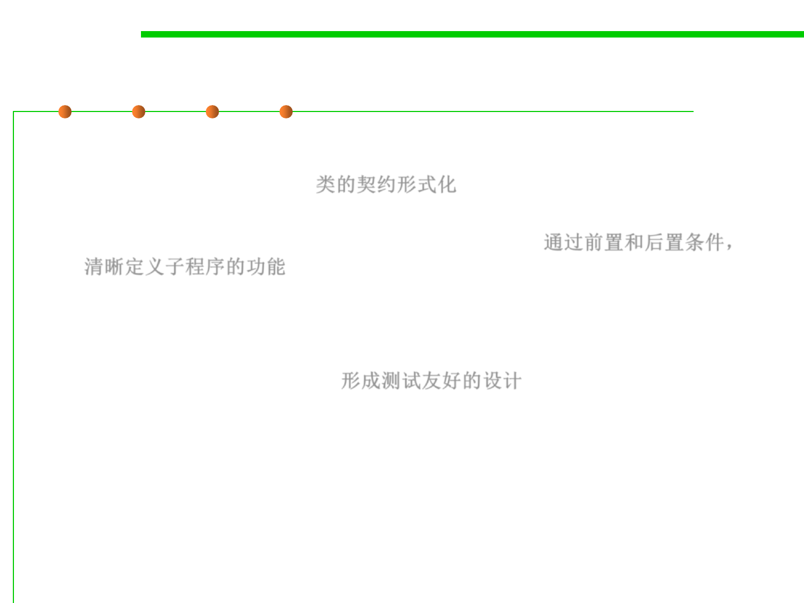

Why DIP?
6.1 Metrics and Construction Principles for Maintainability
▪ Advantages:
– Formalize class contracts. 类的契约形式化
– You can define the services of a routine in terms of pre- and post-
conditions. This makes it very clear what to expect. 通过前置和后置条件，
清晰定义子程序的功能
▪ Try Design for Testing
– Create a test-friendly design 形成测试友好的设计
– A test-friendly module is likely to exhibit other important design
characteristics.
– Example: you would avoid circular dependencies. Business logic will be
better isolated from UI code if you have to test it separately from the UI